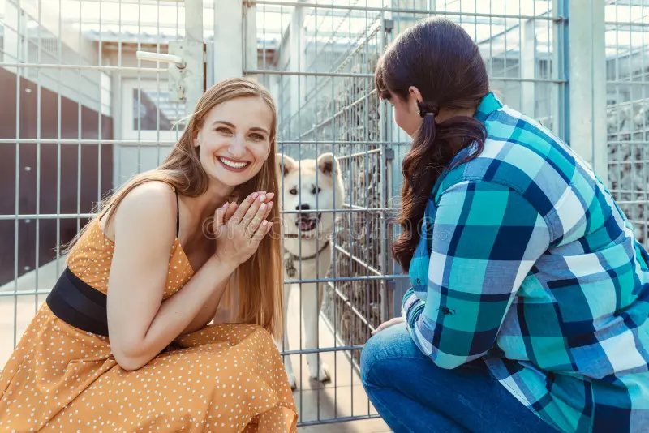

Adoção Responsável e Doações
A adoção de pets é um gesto de amor que transforma vidas, pois resgata animais abandonados e proporciona a eles uma nova chance de ter uma vida feliz. Além disso, traz companhia, benefícios para a saúde mental e a oportunidade de ensinar sobre responsabilidade e empatia.
Você também pode contribuir por meio de doações financeiras ou de produtos (como ração, medicamentos e itens de higiene). Toda ajuda é bem-vinda e nossos pets agradecem!